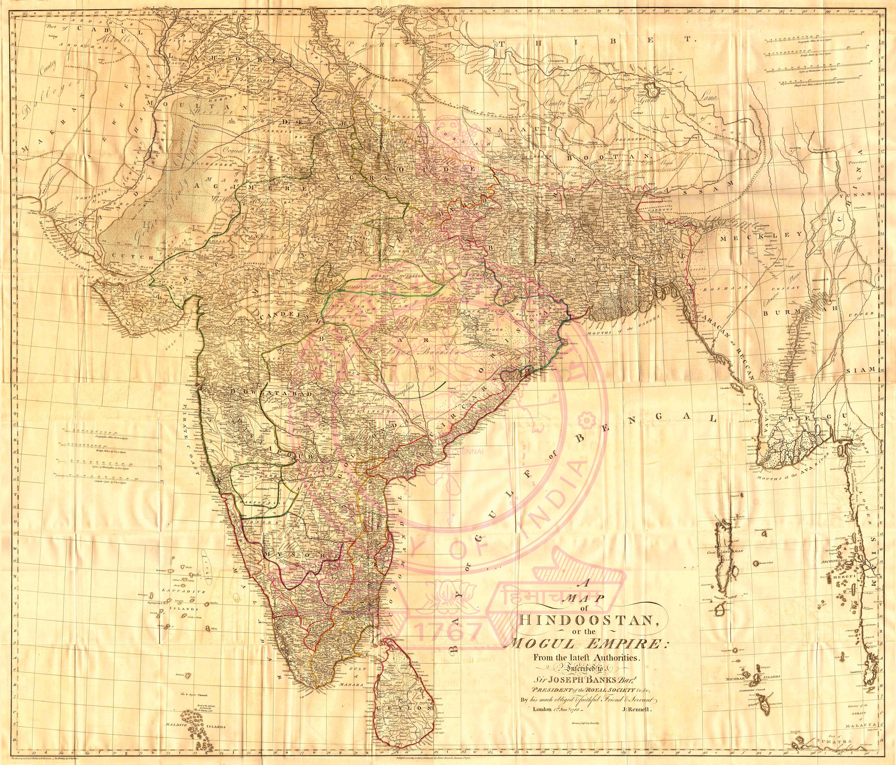
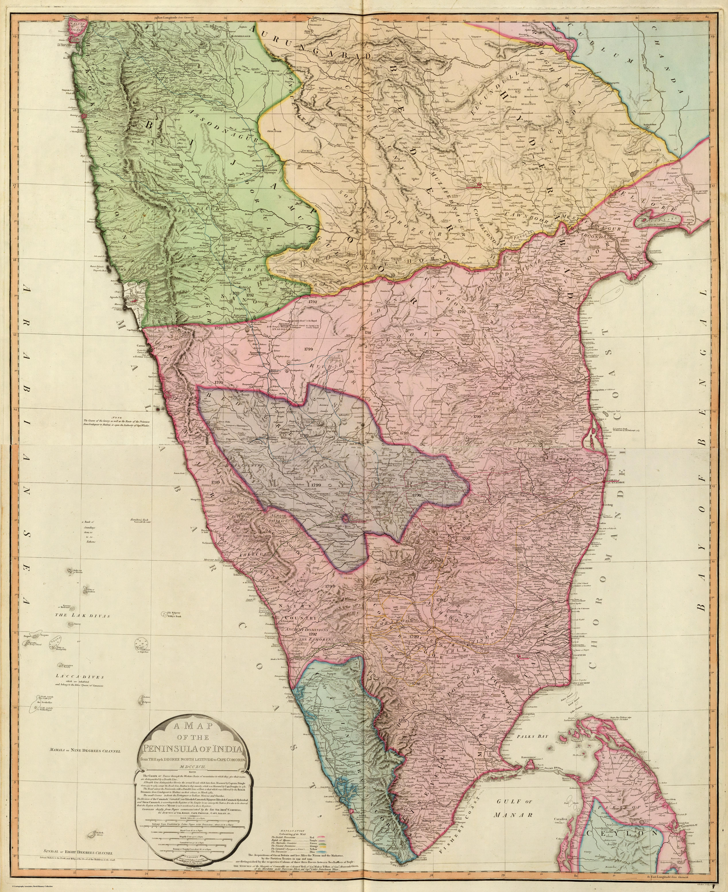
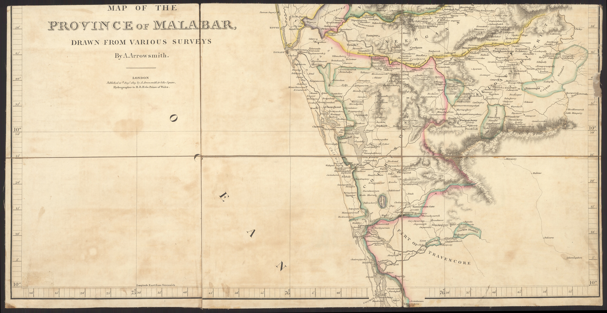
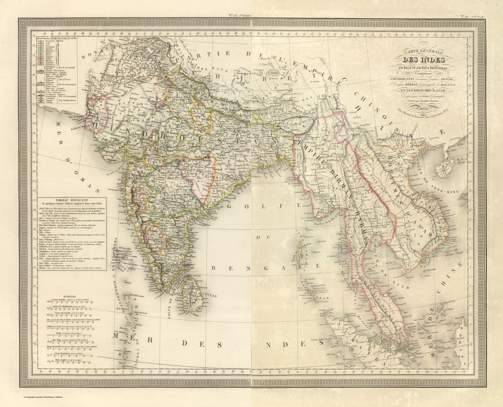

Room 03
The Survey Turn
After Plassey the gaze changes hands and character. With Rennell and the surveyors, India stops being a thing reported and becomes a thing measured — drawn from inside the country by men walking it with chain and theodolite, in the service of a Company that means to govern. Decoration retreats; the grid advances. To map becomes to possess.
 Composite: (Sheets 1 and 2) Hindoostan by J. Rennell F.R.S. 17821781
Composite: (Sheets 1 and 2) Hindoostan by J. Rennell F.R.S. 17821781
Hindoostan Mogul Empire SurveyOfIndia1788 Composite Map: 99-100B. Neueste Karte von Hindostan Bengalen1788
Composite Map: 99-100B. Neueste Karte von Hindostan Bengalen1788 Mappa geogr. Indiæ Orients eller geogr. charta öfver Ostindien1789
Mappa geogr. Indiæ Orients eller geogr. charta öfver Ostindien1789 Composite Map: A map of the Peninsula of India from the 19th degree north latitude to Cape Comorin1792
Composite Map: A map of the Peninsula of India from the 19th degree north latitude to Cape Comorin1792
Composite: India peninsula1800 A New and Accurate Map of the Southern Province of Hindoostan1800
A New and Accurate Map of the Southern Province of Hindoostan1800 Composite: (Sheets 1-3) Map of the Province of Malabar, Drawn from Various Surveys By A. Arrowsmith1809
Composite: (Sheets 1-3) Map of the Province of Malabar, Drawn from Various Surveys By A. Arrowsmith1809
Sheet 1) Map of the Province of Malabar, Drawn from Various Surveys By A. Arrowsmith1809 India1820
India1820
Composite: Carte Generale des Indies1825 Hindoostan1827
Hindoostan1827 Composite: (North and South) This Newly Constructed Map of India From The Latest Surveys of the best Authorities1831
Composite: (North and South) This Newly Constructed Map of India From The Latest Surveys of the best Authorities1831 GTS Index1922Peninsula Triangulation Asiatic Researchesc1820
GTS Index1922Peninsula Triangulation Asiatic Researchesc1820